Ce faci luni
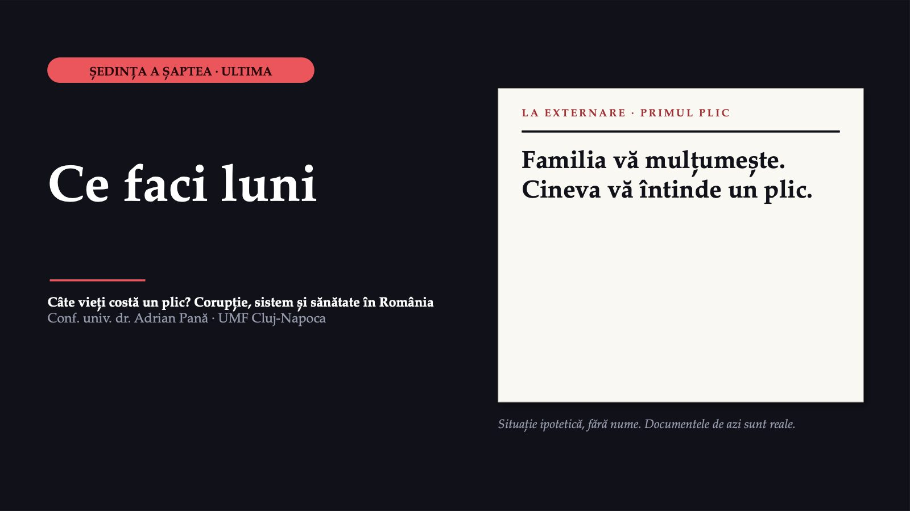
1 / 44Ce faci luni. Este ultima ședință a cursului. Azi nu avem un caz construit, ci o situație pe care o veți întâlni și documente reale: ce îi întreabă statul pe pacienții externați, ce a văzut consiliul etic al unui spital și ce drumuri vă dă legea.
Primul plic
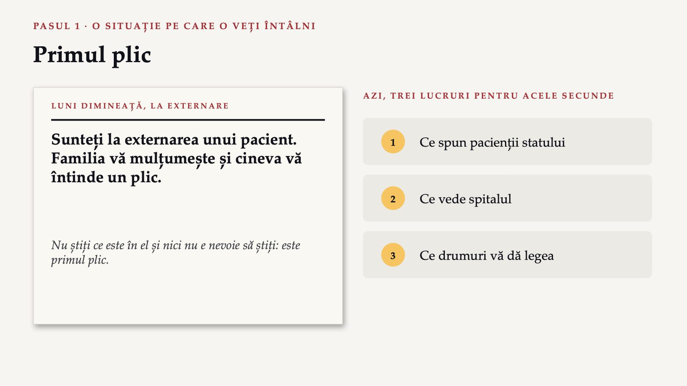
2 / 44Luni dimineață începe din nou o săptămână de spital, iar unii dintre voi veți fi, peste câteva luni, medici rezidenți. Sunteți la externarea unui pacient. Familia vă mulțumește și cineva vă întinde un plic. Nu știți ce este în el și nici nu e nevoie să știți: este primul plic. Decizia este a voastră și se ia în câteva secunde. Ședința de azi vă dă trei lucruri pentru acele secunde: ce spun pacienții statului, ce vede spitalul și ce drumuri vă dă legea.
Opt pași, trei voturi, documente reale
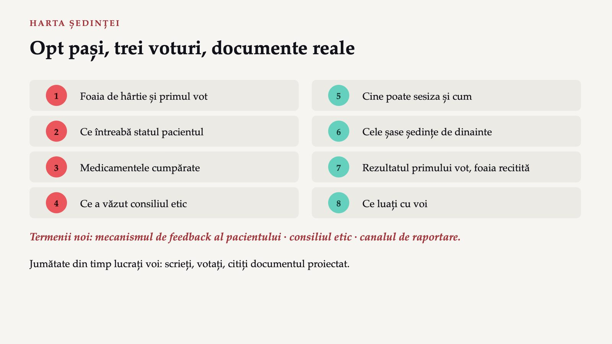
3 / 44Ședința are opt pași. Întâi foaia de hârtie și primul vot. Apoi ce întreabă statul pacientul, medicamentele cumpărate, ce a văzut consiliul etic al unui spital și cine poate sesiza și cum. Apoi cele șase ședințe de dinainte, rezultatul primului vot și ce luați cu voi. Termenii noi de azi sunt trei: mecanismul de feedback al pacientului, consiliul etic și canalul de raportare. Jumătate din timp lucrați voi: scrieți, votați, citiți documentul proiectat și spuneți ce vedeți în el.
Ce faceți luni dimineață la primul plic?
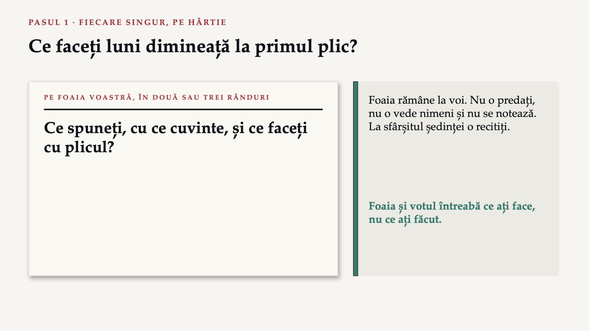
4 / 44Scrieți pe foaie, fiecare singur, în două sau trei rânduri: ce faceți luni dimineață la primul plic? Ce spuneți, cu ce cuvinte, și ce faceți cu plicul? Foaia rămâne la voi: nu o predați, nu o vede nimeni și nu se notează. Regula din prima ședință rămâne aceeași: nicio activitate din acest curs nu vă cere să spuneți ce ați făcut voi, familiile voastre sau oamenii din locul în care faceți practică. Foaia și votul întreabă ce ați face, nu ce ați făcut.
Luni dimineață, la primul plic, ce faceți?
 5 / 44
5 / 44Primul vot, anonim, pe telefon: luni dimineață, la primul plic, ce faceți? Votul întreabă ce ați face. Rezultatul îl vedem la pasul al șaptelea, după tot ce urmează. De ce așteptăm? Pentru că un vot văzut imediat poate deveni o normă: dacă vedeți că mulți colegi au ales aceeași variantă, la sfârșit e greu să vă mai întrebați dacă ați ales-o voi sau sala. Foaia are același rol: fixează ce credeați înainte de documente.
Un mesaj pe telefon, după externare
![PASUL 2 · CE ÎNTREABĂ STATUL PACIENTUL Un mesaj pe telefon, după externare 1 La externare, spitalul trece datele de contact în sistemul casei de asigurări. 2 Zilnic, datele anonimizate pleacă spre platforma mecanismului. 3 Un eșantion ales la întâmplare primește chestionarul prin mesaj scurt sau e-mail. Pacientul nu completează nimic în spital. MESAJ · DUPĂ EXTERNARE „Ministrul sănătății vă invită să răspundeți anonim și gratuit la 8 întrebări…” Ordinul ministrului sănătății nr. 1501/2016, art. 2 și anexa nr. 1.](diapozitive/C07/006.jpg) 6 / 44
6 / 44Din decembrie 2016, un ordin al ministrului sănătății cere spitalelor publice să participe la un mecanism prin care statul îi întreabă pe pacienții externați cum au fost tratați. La externare, spitalul introduce datele de contact ale pacientului în sistemul informatic al Casei Naționale de Asigurări de Sănătate. De acolo, datele anonimizate pleacă zilnic spre platforma mecanismului, iar chestionarul ajunge prin mesaj scurt sau prin e-mail la un eșantion de pacienți ales la întâmplare pentru fiecare spital. Mesajul îl invită pe pacient să răspundă anonim și gratuit la opt întrebări. Pacientul nu completează nimic în spital.
Mecanismul de feedback al pacientului
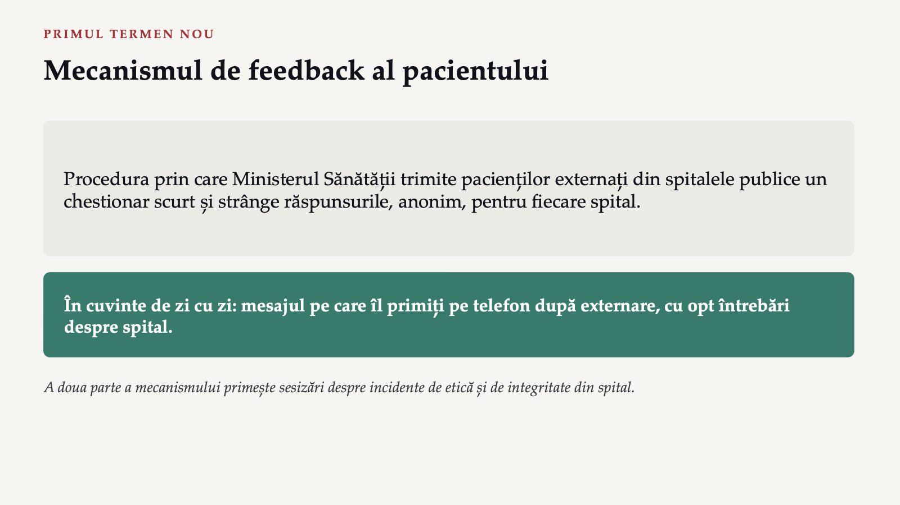
7 / 44Primul termen nou: mecanismul de feedback al pacientului. Este procedura prin care Ministerul Sănătății trimite pacienților externați din spitalele publice un chestionar scurt despre internare și strânge răspunsurile, anonim, pentru fiecare spital. În cuvinte de zi cu zi: mesajul pe care îl primiți pe telefon după externare, cu opt întrebări despre spital. Mecanismul are și o a doua parte: primește sesizări despre incidente de etică și de integritate din spital.
Ce întreabă, exact
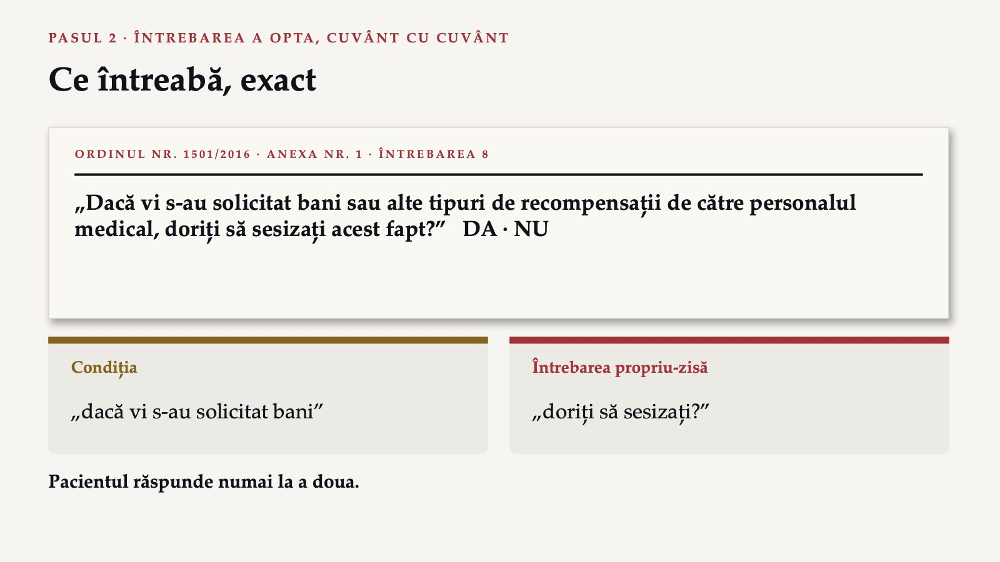
8 / 44Iată textul întrebării a opta, cuvânt cu cuvânt, din anexa ordinului: dacă vi s-au solicitat bani sau alte tipuri de recompensații de către personalul medical, doriți să sesizați acest fapt? Răspunsurile sunt DA sau NU. Citiți-o încă o dată, încet. Întrebarea are două părți. Prima este o condiție: dacă vi s-au solicitat bani. A doua este întrebarea propriu-zisă: doriți să sesizați? Pacientul răspunde numai la a doua. Nu i se cere să spună dacă i s-au cerut bani, ci dacă vrea să sesizeze faptul acesta.
Din 100 de pacienți care răspund la chestionar, câți spun „Da, vreau să sesizez că mi s-au cerut bani”?
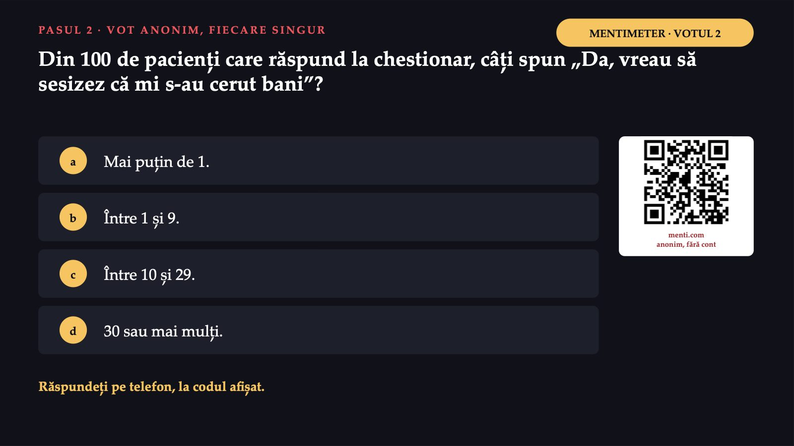
9 / 44Al doilea vot, anonim, pe telefon. Din 100 de pacienți care răspund la chestionar, câți spun: da, vreau să sesizez că mi s-au cerut bani? Rezultatul îl vedem o dată, după ce se închide votul, apoi vedem cifrele reale.
4,16%
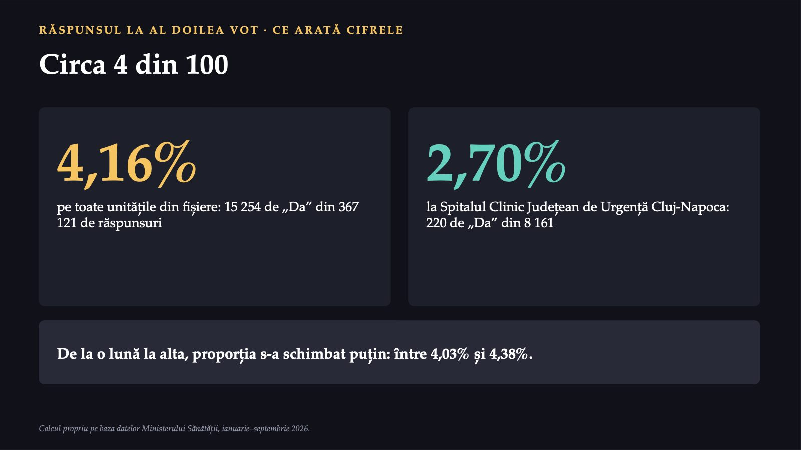
10 / 44Ministerul Sănătății publică, pe portalul de date deschise, câte un fișier pe lună cu răspunsurile pentru fiecare spital. Am adunat lunile ianuarie–septembrie 2026 și am calculat proporțiile; sunt un calcul pe baza datelor ministerului, nu valori publicate ca atare. Pe toate unitățile din fișiere, la întrebarea a opta au răspuns „Da” 15 254 de pacienți, din 367 121, adică 4,16%: circa 4 din 100. Proporția s-a schimbat puțin de la o lună la alta, între 4,03% și 4,38%. La Spitalul Clinic Județean de Urgență Cluj-Napoca, au răspuns „Da” 220 de pacienți, din 8 161, adică 2,70%: aproape 3 din 100.
Varianta (b): între 1 și 9 din 100
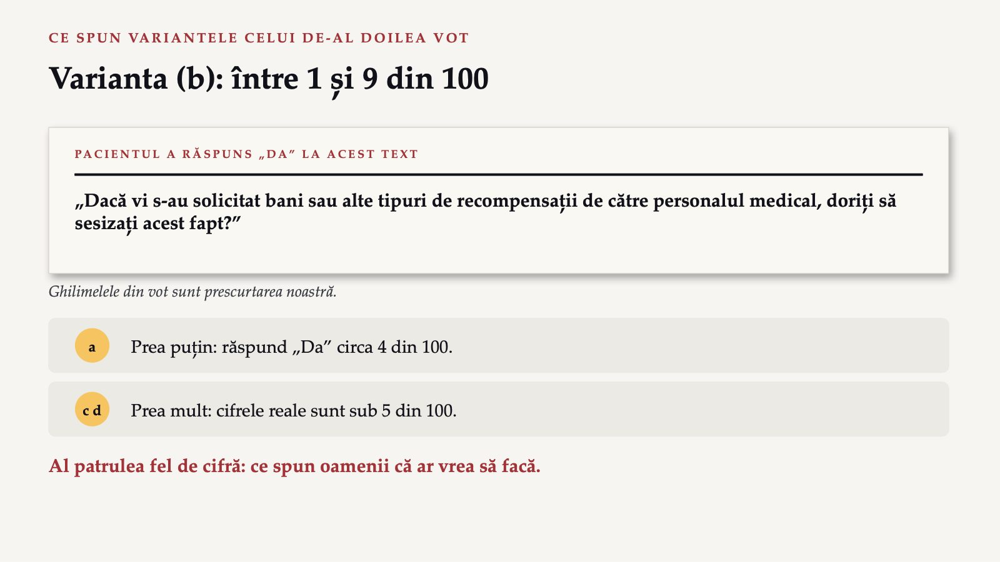
11 / 44Varianta documentată este (b): între 1 și 9 din 100. Pe toate unitățile din fișiere, proporția a fost 4,16%, iar la spitalul județean din Cluj-Napoca, 2,70%; ambele cad în același interval. Ghilimelele din vot sunt prescurtarea noastră: pacientul a răspuns „Da” la textul întrebării a opta. Varianta (a) ar fi corectă dacă aproape nimeni nu ar vrea să sesizeze; răspund „Da” de câteva ori mai mulți. Variantele (c) și (d) cer 10 sau mai mulți din 100, iar cifrele reale sunt sub 5 din 100. Le alege cine citește întrebarea ca „vi s-au cerut bani?”. În prima ședință ați văzut trei feluri de cifre; aici avem al patrulea: ce spun oamenii că ar vrea să facă.
Trei întrebări din prima ședință
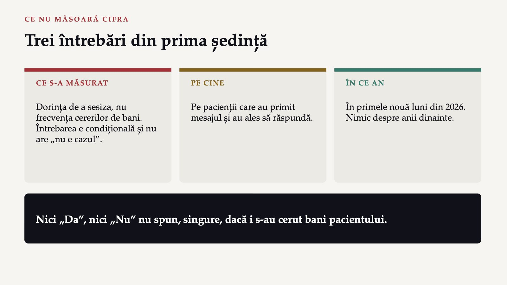
12 / 44Cifra este reală, dar se citește cu cele trei întrebări din prima ședință. Ce s-a măsurat: dorința de a sesiza, nu frecvența cererilor de bani. Întrebarea este condițională și nu are varianta „nu e cazul”. Un pacient căruia i s-au cerut bani, dar nu vrea să sesizeze, răspunde „Nu”. Un pacient căruia nu i s-a cerut nimic poate răspunde „Nu”, dar și „Da”, în sensul „aș sesiza, dacă mi s-ar cere”. Pe cine: pe pacienții care au primit mesajul și au ales să răspundă; nu știm dacă seamănă cu cei care nu răspund. În ce an: în primele nouă luni din 2026.
2,70%
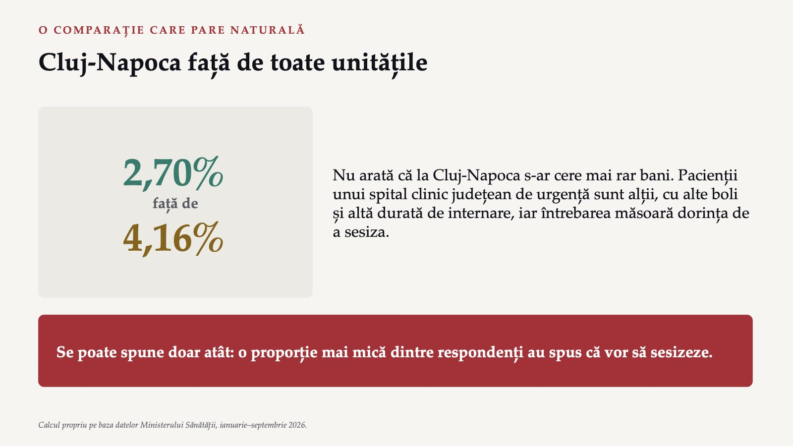
13 / 44O comparație care pare naturală: 2,70% la spitalul din Cluj-Napoca față de 4,16% pe toate rândurile fișierelor. Ea nu arată că spitalul din Cluj-Napoca ar avea mai puține cereri de bani. Pacienții unui spital clinic județean de urgență sunt alții decât cei ai unui spital orășenesc, cu alte boli și altă durată de internare, iar întrebarea măsoară dorința de a sesiza, nu cererile. Se poate spune doar atât: la spitalul județean din Cluj-Napoca, o proporție mai mică dintre respondenți au spus că vor să sesizeze.
Un „Da” nu este o sesizare
 14 / 44
14 / 44Pacientul care răspunde „Da” la întrebarea a opta primește un mesaj nou. Mesajul îl roagă să formuleze o plângere către autoritățile abilitate, cu trimitere la art. 288 din Codul de procedură penală, sau să trimită o sesizare Ministerului Sănătății, prin poștă sau prin e-mail; adresa este în textul ordinului. Dacă pacientul formulează sesizarea, serviciul de integritate al ministerului o transmite autorităților abilitate. Dacă se oprește la „Da”, nu s-a sesizat nimic. Diferența contează luni: un pacient care vă spune că a răspuns la chestionar nu a sesizat încă nimic. Dacă vrea să o facă, are nevoie să știe unde și cum.
11,68%
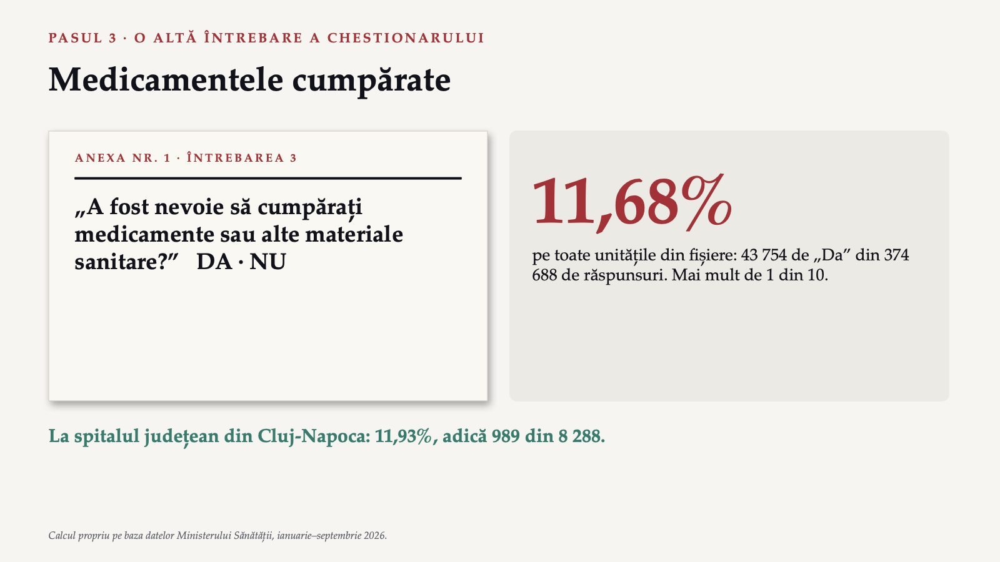
15 / 44Chestionarul are o întrebare care nu vorbește despre bani dați cuiva, dar vorbește tot despre bani. Este întrebarea a treia: a fost nevoie să cumpărați medicamente sau alte materiale sanitare? Pe toate unitățile din fișiere, în ianuarie–septembrie 2026, au răspuns „Da” 43 754 de pacienți, din 374 688, adică 11,68%: mai mult de 1 din 10. La spitalul județean din Cluj-Napoca, 989 din 8 288, adică 11,93%. Este tot un calcul pe baza datelor ministerului.
Două întrebări care nu se adună
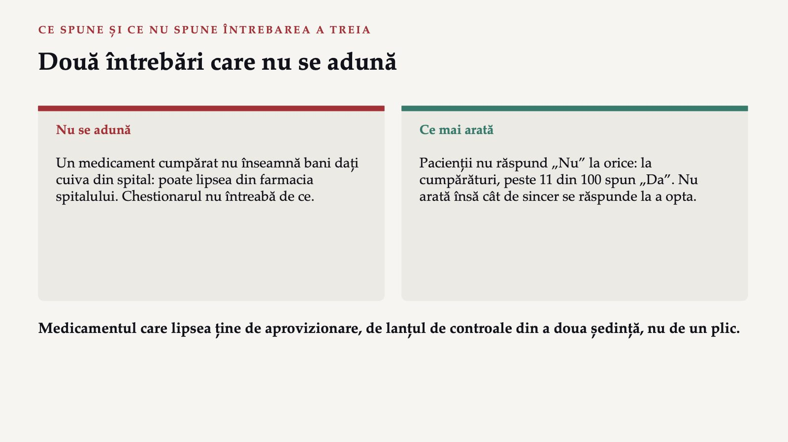
16 / 44Cifra aceasta este de aproape trei ori mai mare decât cea de la întrebarea a opta, dar cele două nu măsoară același lucru și nu se adună. Un pacient care a cumpărat un medicament nu a dat neapărat bani cuiva din spital. Poate medicamentul lipsea din farmacia spitalului, poate i s-a recomandat ceva ce spitalul nu acordă, poate a cumpărat el, din proprie inițiativă. Chestionarul nu întreabă de ce. Pentru un medic, întrebarea utilă este: la pacientul vostru, de ce a fost nevoie? Dacă spitalul nu avea medicamentul, motivul ține de aprovizionare, de lanțul de controale din a doua ședință. Întrebarea a treia mai arată că pacienții nu răspund „Nu” la orice.
0
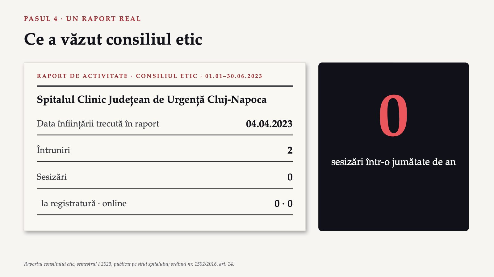
17 / 44Pe lângă minister, pacientul are o adresă în spitalul însuși: consiliul etic. Consiliul face rapoarte: ordinul cere ca raportul să fie încărcat în sistemul informatic al ministerului după fiecare semestru și după fiecare an. Spitalul Clinic Județean de Urgență Cluj-Napoca are pe situl lui raportul pentru prima jumătate a anului 2023: un document scanat, de două pagini. Raportul trece ca dată a înființării consiliului 04.04.2023. În perioada 01.01–30.06.2023 consiliul s-a întrunit de 2 ori și a primit 0 sesizări: 0 la registratură și 0 online.
1 542
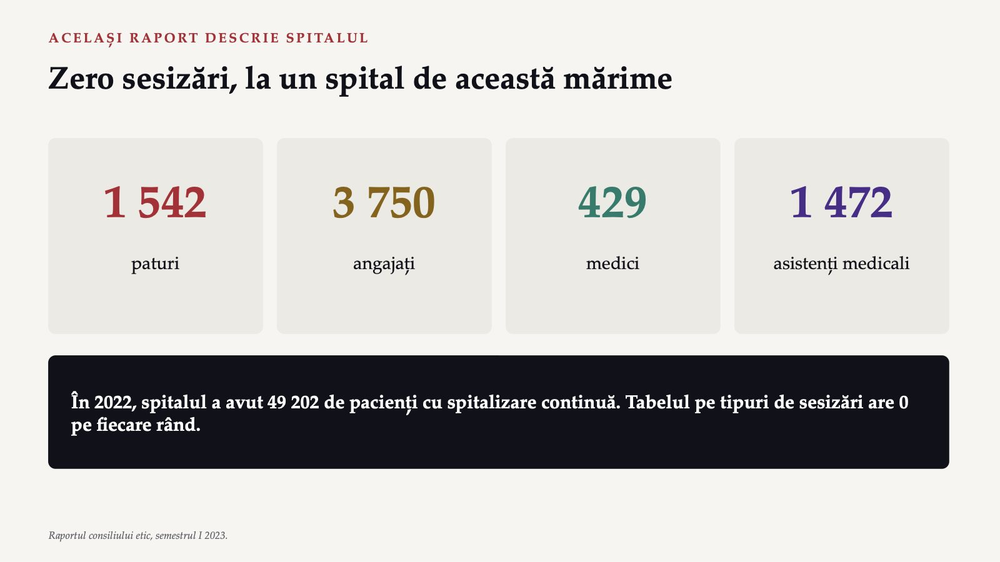
18 / 44Același raport descrie spitalul: 1 542 de paturi și 3 750 de angajați, dintre care 429 de medici și 1 472 de asistenți medicali. În 2022, spitalul a avut 49 202 de pacienți cu spitalizare continuă. Tabelul care împarte sesizările pe tipuri are 0 pe fiecare rând: sesizări ale pacienților, ale asociațiilor de pacienți și ale personalului.
Consiliul etic
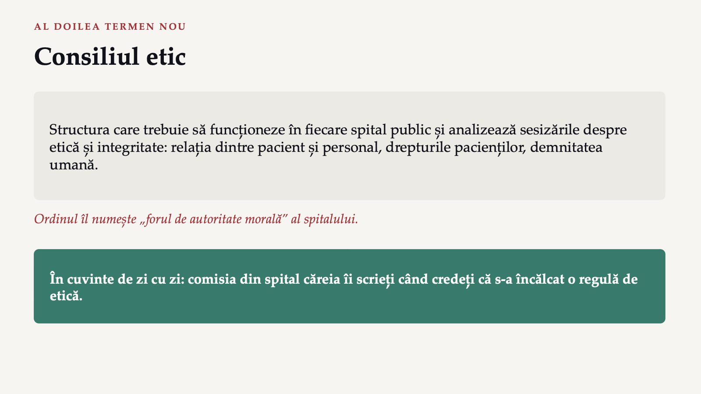
19 / 44Al doilea termen nou: consiliul etic. Este structura care trebuie să funcționeze în fiecare spital public și analizează sesizările despre etică și integritate: relația dintre pacient și personal, drepturile pacienților, demnitatea umană. Ordinul care îl înființează îl numește forul de autoritate morală al spitalului. În cuvinte de zi cu zi: comisia din spital căreia îi scrieți când credeți că s-a încălcat o regulă de etică.
Cine îl compune și ce face
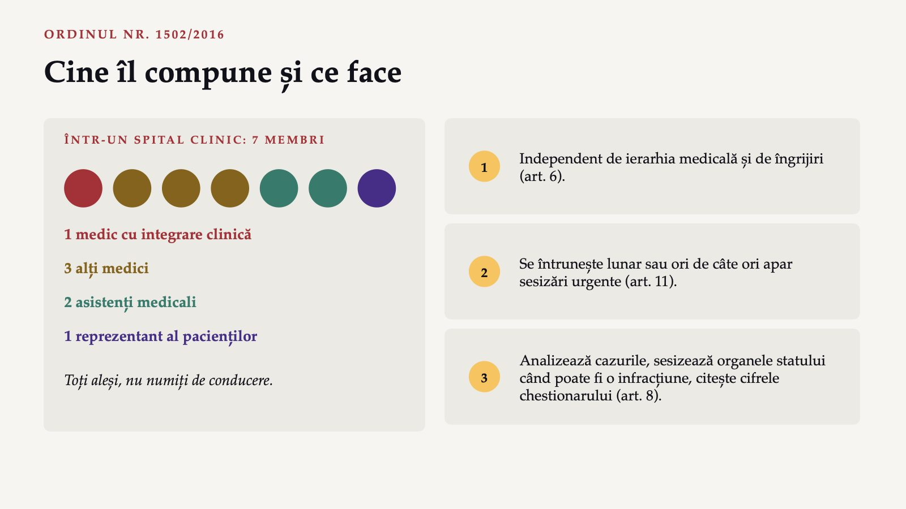
20 / 44Ordinul despre consiliul etic spune cum arată și ce face. Într-un spital clinic, consiliul are 7 membri: un reprezentant al medicilor cu integrare clinică, 3 ai celorlalți medici, 2 ai asistenților medicali și un reprezentant al asociațiilor de pacienți. Toți sunt aleși, nu numiți de conducere. Două trăsături îl deosebesc de o comisie oarecare: este independent de ierarhia medicală și de îngrijiri a spitalului și se întrunește lunar sau ori de câte ori apar sesizări urgente. Analizează cazurile de încălcare a principiilor morale și a drepturilor pacienților, sesizează organele statului când o speță poate fi o infracțiune și analizează rezultatele mecanismului de feedback.
O tentație și două motive
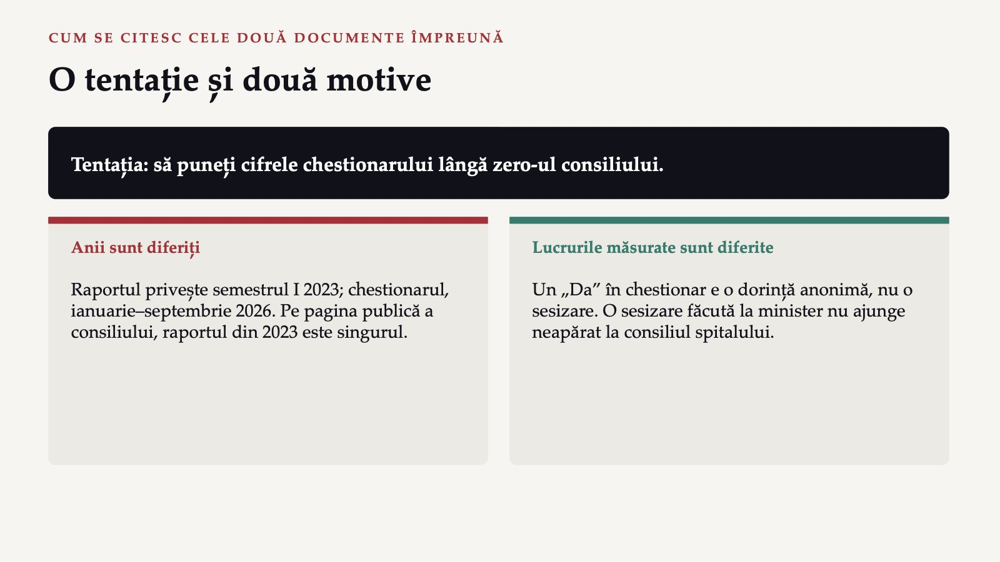
21 / 44Tentația este să puneți cifrele chestionarului lângă zero-ul consiliului. Comparația aceasta este greșită, din două motive. Primul: anii sunt diferiți. Raportul consiliului privește prima jumătate a anului 2023, iar cifrele chestionarului, ianuarie–septembrie 2026; pe pagina publică a consiliului, consultată în noiembrie 2026, raportul din 2023 este singurul. Nu știm câte sesizări a primit consiliul în 2026. Al doilea: lucrurile măsurate sunt diferite. Un „Da” în chestionar este o dorință anonimă, nu o sesizare, iar o sesizare făcută la minister nu ajunge neapărat la consiliul etic al spitalului.
Trei explicații posibile
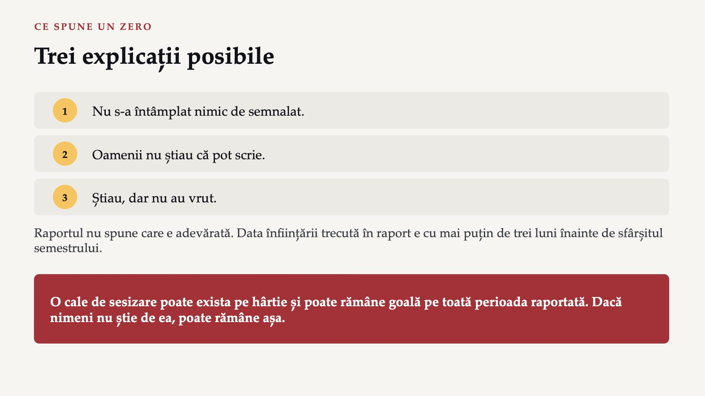
22 / 44Ce se poate spune cinstit este mai puțin, dar e util. Într-o jumătate de an, într-un spital cu 1 542 de paturi, consiliul etic nu a înregistrat nicio sesizare. Un zero ca acesta are cel puțin trei explicații posibile: nu s-a întâmplat nimic de semnalat, oamenii nu știau că pot scrie, sau știau, dar nu au vrut. Raportul nu spune care este adevărată, iar noi nu o știm. Data înființării trecută în raport este cu mai puțin de trei luni înainte de sfârșitul perioadei, ceea ce poate explica o parte. Un singur zero nu spune nimic despre alte spitale sau alți ani. Arată numai că o cale de sesizare poate exista pe hârtie și poate rămâne goală.
Zece minute
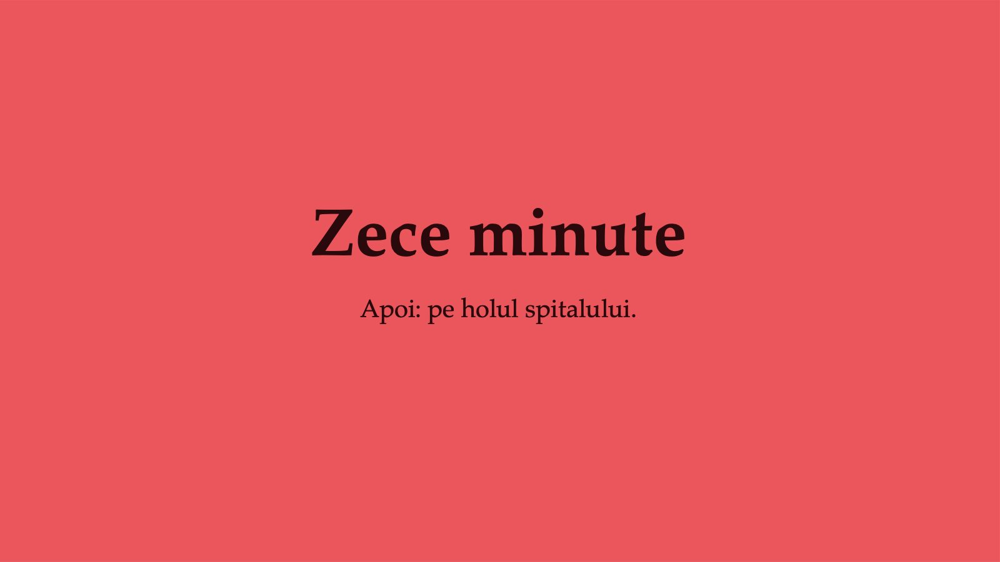
23 / 44Ne revedem peste zece minute, pe holul spitalului.
Pe hol
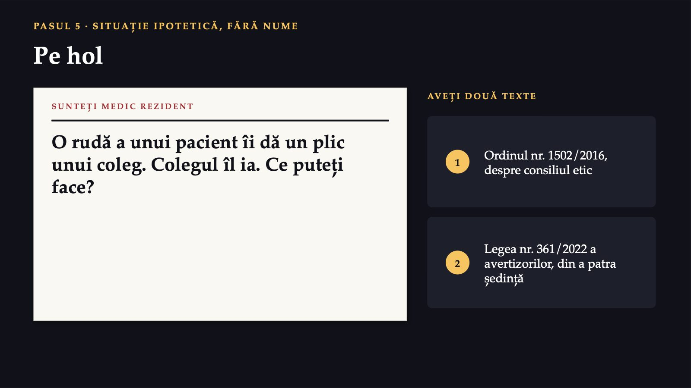
24 / 44Ajungem la întrebarea practică. Sunteți medic rezident. Pe hol, vedeți cum o rudă a unui pacient îi dă un plic unui coleg, iar colegul îl ia. Ce puteți face? Aveți la dispoziție două texte: ordinul despre consiliul etic, pe care l-ați văzut la pasul al patrulea, și legea avertizorilor în interes public, Legea nr. 361/2022, despre care ați vorbit în a patra ședință.
Cine poate sesiza consiliul etic
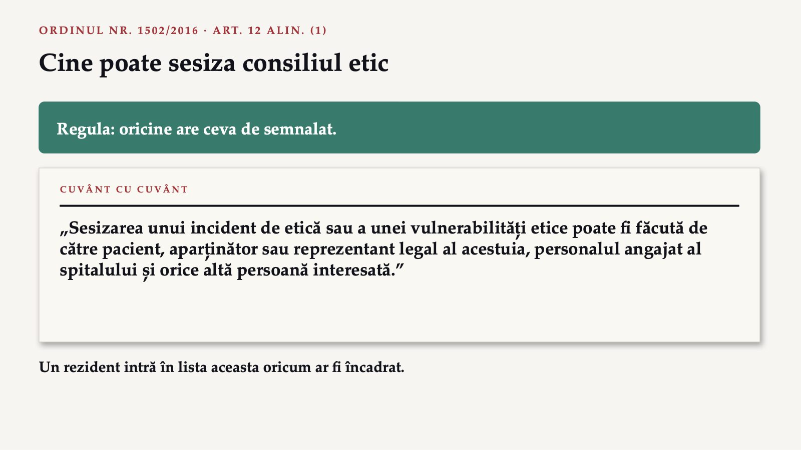
25 / 44Consiliul etic poate fi sesizat de oricine are ceva de semnalat. Ordinul spune, cuvânt cu cuvânt: sesizarea unui incident de etică sau a unei vulnerabilități etice poate fi făcută de către pacient, aparținător sau reprezentant legal al acestuia, personalul angajat al spitalului și orice altă persoană interesată. Lista este largă. Un rezident intră în ea oricum ar fi încadrat.
Cu număr de înregistrare și cu numele vostru
![CUM AJUNGE O SESIZARE LA CONSILIUL ETIC Cu număr de înregistrare și cu numele vostru Cum se depune Se adresează managerului: la registratură, prin e-mail sau în formularul online al spitalului. Primiți un număr de înregistrare, adică dovada că sesizarea există. Anonimă? Se clasează Excepția e îngustă: peste 3 sesizări anonime într-un an, despre aceeași secție sau despre același angajat. Consiliul adoptă prin vot secret o hotărâre; managerul vă comunică apoi măsurile, în cel mult 14 zile. Ordinul nr. 1502/2016, art. 12 și art. 13.](diapozitive/C07/026.jpg) 26 / 44
26 / 44Sesizarea se adresează managerului spitalului: se depune la registratură, se trimite prin poștă electronică sau se completează în formularul online de pe pagina spitalului. Fiecare sesizare primește un număr de înregistrare, comunicat celui care a făcut-o: este dovada că sesizarea există. O regulă pe care mulți nu o așteaptă: sesizările anonime se clasează. Excepția este îngustă: dacă într-un an există mai mult de 3 sesizări anonime despre aceeași secție sau despre același angajat, consiliul le analizează. După sesizare, consiliul adoptă prin vot secret o hotărâre sau un aviz, iar managerul comunică măsurile în cel mult 14 zile.
Pe cine apără legea
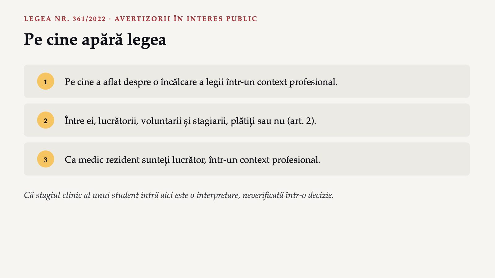
27 / 44Legea nr. 361/2022 se aplică celor care au aflat despre o încălcare a legii într-un context profesional: între ei, lucrătorii, voluntarii și stagiarii, plătiți sau nu. Ca medic rezident sunteți lucrător și sunteți într-un context profesional. Legea îi numește și pe stagiari; că stagiul clinic al unui student intră aici este o interpretare, pe care nu am verificat-o într-o decizie.
„Încălcări ale legii”
![INTRĂ PLICUL DE PE HOL ÎN LEGE? „Încălcări ale legii” 1 Fapte care încalcă legea, între altele în sănătatea publică, și sunt abateri disciplinare, contravenții sau infracțiuni (art. 3). 2 Codul penal pedepsește luarea de mită de către funcționarul public; în 2015, Înalta Curte, cu premisa că medicul spitalului public este funcționar public pentru legea penală: plățile de la pacienți nu sunt un drept recunoscut de lege. 3 Ajunge o suspiciune rezonabilă; nu trebuie o faptă dovedită. Din aprilie 2025, legea drepturilor pacientului permite numai donații către spital, nu către personal.](diapozitive/C07/028.jpg) 28 / 44
28 / 44Intră plicul de pe hol în ce numește legea încălcări ale legii? Legea le definește ca fapte care încalcă dispozițiile legale, între altele în domeniul sănătății publice, și care sunt abateri disciplinare, contravenții sau infracțiuni. Primirea unui plic de către medicul unui spital public poate fi o infracțiune: Codul penal pedepsește luarea de mită de către funcționarul public, iar în 2015 Înalta Curte de Casație și Justiție a stabilit că medicul unui spital public este funcționar public și că primirea de plăți suplimentare sau donații de la pacienți nu este exercitarea unui drept recunoscut de lege. Informația raportată poate fi și o suspiciune rezonabilă. Decizia din 2015 privește forma veche a legii; din aprilie 2025, legea drepturilor pacientului permite numai donații către spital, nu către personal.
Canalul de raportare
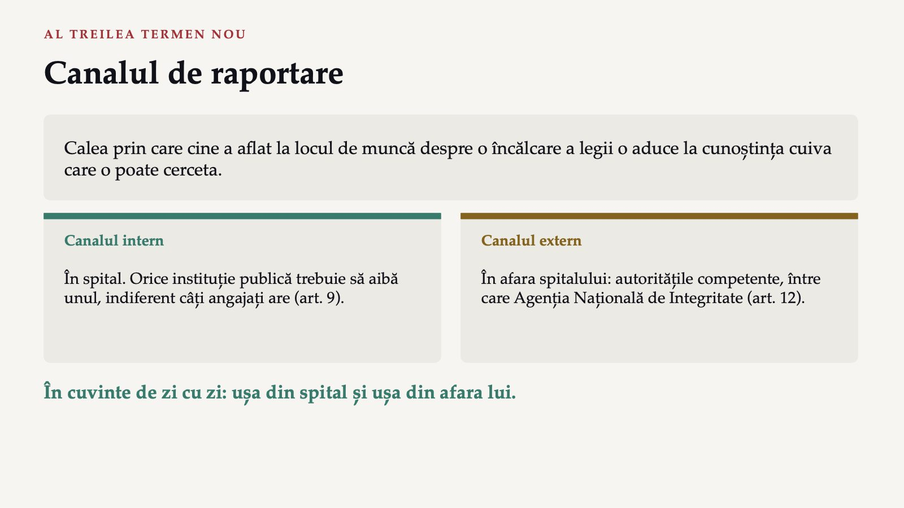
29 / 44Legea vă dă două canale: unul în spital și unul în afara lui. Al treilea termen nou: canalul de raportare, calea prin care o persoană care a aflat la locul de muncă despre o încălcare a legii o aduce la cunoștința cuiva care o poate cerceta. Legea obligă orice instituție publică, indiferent câți angajați are, să aibă un canal intern; spitalul public trebuie, deci, să aibă unul. Canalele externe sunt autoritățile competente, între care Agenția Națională de Integritate. În cuvinte de zi cu zi: ușa din spital și ușa din afara lui.
Pe care ușă intrați?
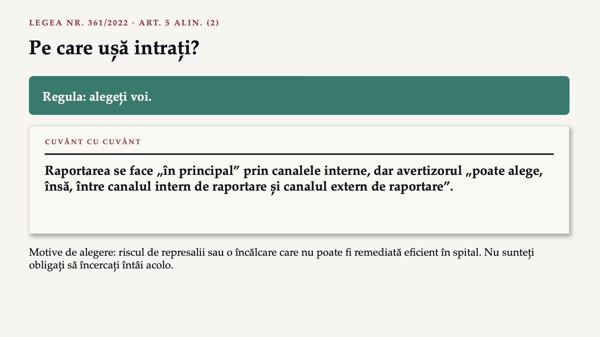
30 / 44Pe care ușă intrați? Legea spune că raportarea se face în principal prin canalele interne, dar avertizorul poate alege, însă, între canalul intern de raportare și canalul extern de raportare. Legea dă și exemple de motive pentru alegere: riscul de represalii dacă raportați în spital sau faptul că încălcarea nu poate fi remediată eficient pe calea internă. Nu sunteți obligați să încercați întâi în spital.
Fără nume, dar cu fapte
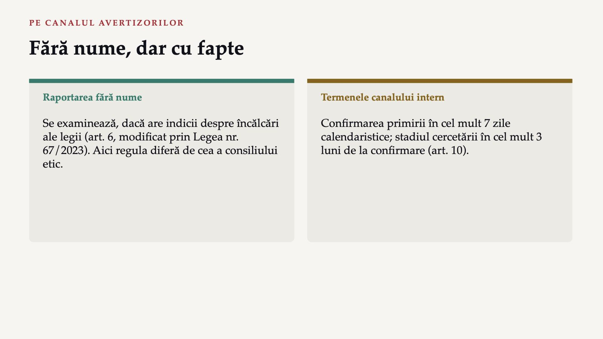
31 / 44Ce se întâmplă cu o raportare fără nume? Pe canalul avertizorilor, ea poate fi cercetată, iar aici legea este diferită de ordinul despre consiliul etic. Raportarea fără nume, date de contact sau semnătură se examinează și se soluționează în măsura în care conține indicii referitoare la încălcări ale legii. Pe canalul intern, spitalul trebuie să vă confirme primirea raportării în cel mult 7 zile calendaristice și să vă spună în ce stadiu este cercetarea în cel mult 3 luni de la confirmare.
Ce vă protejează: trei condiții, toate deodată
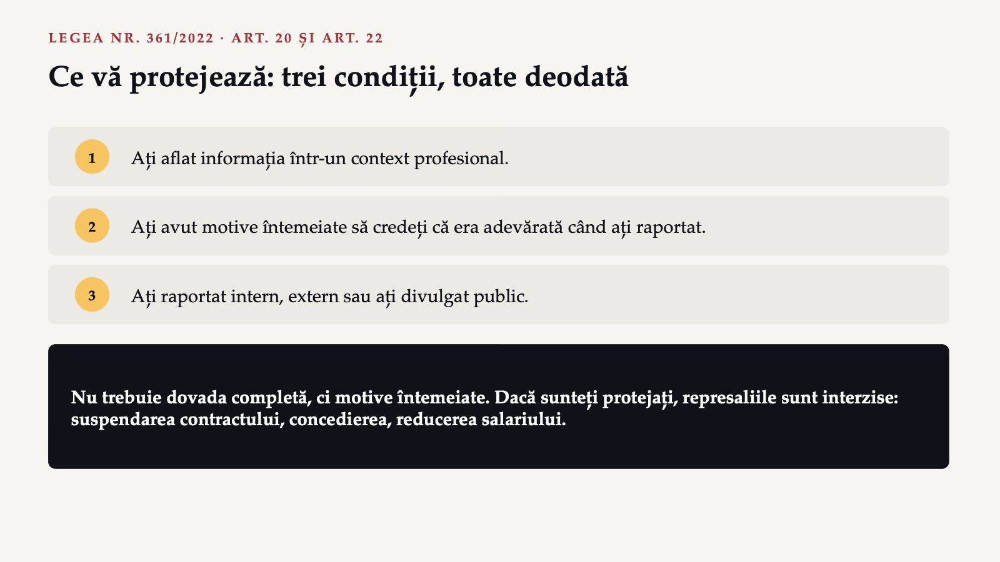
32 / 44Ce vă protejează? Legea cere trei condiții, toate deodată: să fi aflat informația într-un context profesional; să fi avut motive întemeiate să credeți că informațiile erau adevărate la momentul raportării; și să fi făcut o raportare internă, una externă sau o divulgare publică. Condiția a doua vă privește direct: nu trebuie să aveți dovada completă, dar trebuie să aveți motive întemeiate. Legea nu dă exemple de motive întemeiate. Ca regulă practică, nu ca text de lege: ce ați văzut voi cântărește, de obicei, mai mult decât ce ați auzit de la alții. Dacă sunteți protejați, legea interzice orice represalii, între care suspendarea sau modificarea contractului, concedierea și reducerea salariului.
Ce poate face un rezident care vede plicul dat unui coleg?
![MENTIMETER · VOTUL 3 PASUL 5 · VOT ANONIM, FIECARE SINGUR Ce poate face un rezident care vede plicul dat unui coleg? a Nimic: numai pacientul sau familia lui pot sesiza consiliul etic. b Poate sesiza consiliul etic, cu numele lui, sau poate raporta ca avertizor, în spital sau direct în afara lui; legea îl protejează dacă, între alte condiții, avea motive întemeiate să creadă ce a raportat. c Poate trimite consiliului etic o sesizare anonimă, pe care consiliul este obligat să o analizeze. d Trebuie să raporteze întâi în spital; numai dacă spitalul nu răspunde are voie să meargă la o autoritate din afară. Răspundeți pe telefon, la codul afișat. menti.com anonim, fără cont](diapozitive/C07/033.jpg) 33 / 44
33 / 44Al treilea vot, anonim, pe telefon: ce poate face un rezident care vede plicul dat unui coleg? Rezultatul îl vedem o dată, după ce se închide votul, apoi discutăm fiecare variantă.
Varianta (b)
![CE SPUN VARIANTELE CELUI DE-AL TREILEA VOT Varianta (b) Personalul poate sesiza consiliul etic (art. 12). Informația despre plic este informație despre o încălcare a legii, cel puțin ca suspiciune rezonabilă (art. 3; Înalta Curte, 2015). Canalul intern sau extern, la alegere (art. 5). Protecția: între alte condiții, motivele întemeiate (art. 20). a Falsă: lista include personalul și orice persoană interesată. c Falsă pentru consiliul etic: sesizările anonime se clasează. Confuzia vine din legea avertizorilor. d Falsă: avertizorul „poate alege”; nu așteaptă întâi răspunsul spitalului.](diapozitive/C07/034.jpg) 34 / 44
34 / 44Varianta documentată este (b). Ordinul îi dă dreptul de a sesiza consiliul etic personalului spitalului și oricărei persoane interesate, nu numai pacientului. Informația despre un plic primit de un medic dintr-un spital public intră în informațiile despre încălcări ale legii acoperite de legea avertizorilor, cel puțin ca suspiciune rezonabilă. Legea îi dă rezidentului și canalul intern, și pe cel extern, la alegere. Protecția vine dacă sunt îndeplinite cele trei condiții, între care motivele întemeiate. Varianta (a) este falsă: lista include explicit personalul și orice altă persoană interesată. Varianta (c) este falsă pentru consiliul etic, unde sesizările anonime se clasează; confuzia vine din legea avertizorilor, unde o raportare anonimă se examinează dacă are indicii. Varianta (d) este falsă: avertizorul poate alege și nu trebuie să aștepte întâi răspunsul spitalului.
Unde, pe ce temei, ce primiți înapoi
![O SESIZARE PE O PAGINĂ Unde, pe ce temei, ce primiți înapoi CONSILIUL ETIC Prin manager, pe temeiul art. 12 din ordinul nr. 1502/2016. Primiți un număr de înregistrare, apoi hotărârea sau avizul. AVERTIZORII Canalul intern al spitalului sau Agenția Națională de Integritate, pe temeiul art. 5 și art. 6 din Legea nr. 361/2022. Confirmarea în cel mult 7 zile, informarea în cel mult 3 luni. URMĂRIREA PENALĂ Dacă fapta poate fi o infracțiune. Este calea pe care o indică și mesajul chestionarului pentru pacienți.](diapozitive/C07/035.jpg) 35 / 44
35 / 44Fișa disciplinei cere, pentru ședința de încheiere, un exercițiu de raportare: organul competent, temeiul legal și sesizarea scrisă. Unde? Consiliul etic al spitalului, prin manager, dacă vreți ca spitalul să analizeze relația dintre personal și pacient; primiți un număr de înregistrare, apoi hotărârea sau avizul. Canalul intern al spitalului pentru avertizori sau Agenția Națională de Integritate, dacă vreți să raportați o încălcare a legii și să fiți protejați; primiți confirmarea în cel mult 7 zile și o informare în cel mult 3 luni. Organele de urmărire penală, dacă fapta poate fi o infracțiune: este calea pe care o indică și mesajul chestionarului.
Ce scrieți
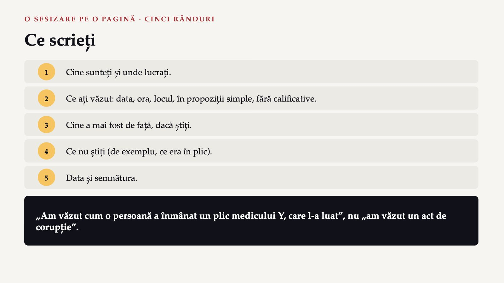
36 / 44Legea spune ce conține o raportare: numele și datele de contact ale celui care raportează, contextul profesional, persoana vizată, dacă e cunoscută, descrierea faptei, probele, dacă există, data și semnătura. Pe o pagină, ar arăta așa: cine sunteți și unde lucrați; ce ați văzut, cu data, ora și locul, în propoziții simple, fără calificative; cine a mai fost de față; ce nu știți, de exemplu ce era în plic; data și semnătura. Diferența dintre „am văzut un plic dat și luat” și „am văzut un act de corupție” este cea din a doua ședință: spuneți ca sigur numai ce ați văzut. Restul îl stabilește cine cercetează.
Instrumentul există. Efectul nu e măsurat.
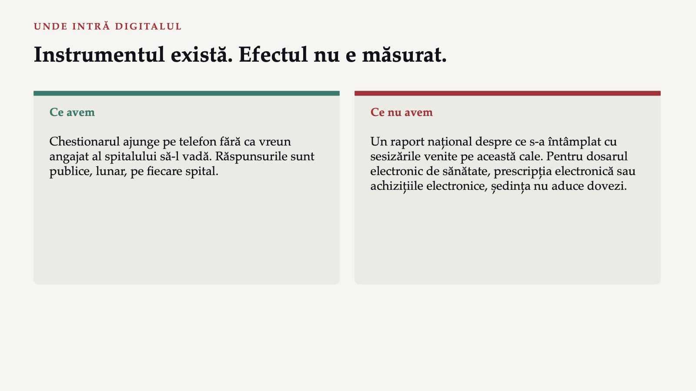
37 / 44Fișa disciplinei propune și o întrebare despre digitalizare: poate tehnologia să reducă corupția din spitale? Documentele de azi răspund pe o parte mică a întrebării, dar concret. Mecanismul de feedback este el însuși un instrument digital: chestionarul ajunge la pacient pe telefon, fără ca vreun angajat al spitalului să-l vadă. Avem date: răspunsuri lunare, pe fiecare spital, publice. Ordinul cere și o informare anuală a publicului, dar nu am găsit un raport național care să spună ce s-a întâmplat cu sesizările venite pe această cale. Avem instrumentul și cifrele, nu și măsurarea efectului. Despre dosarul electronic de sănătate, prescripția electronică sau sistemul electronic al achizițiilor publice, ședința nu aduce dovezi.
Ședințele 1–3
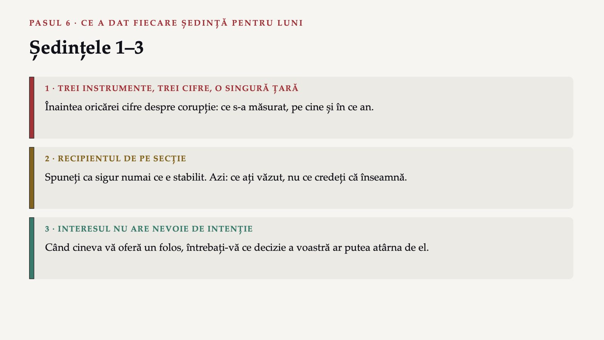
38 / 44Cursul a avut șapte ședințe, fiecare încheiată cu câteva rânduri despre ce faceți diferit. Ședința întâi: înaintea oricărei cifre despre corupție, întrebați ce s-a măsurat, pe cine și în ce an; azi ați aplicat regula pe o cifră nouă, cea a dorinței de a sesiza. Ședința a doua: spuneți ca sigur numai ce e stabilit; azi ați aplicat regula pe sesizarea scrisă. Ședința a treia: conflictul de interese este o situație, nu o faptă; când cineva vă oferă un folos, întrebați-vă întâi ce decizie a voastră ar putea atârna de el.
Ședințele 4–7
 39 / 44
39 / 44Ședința a patra: titlul unui studiu spune ce cred autorii, iar metoda spune cât vă puteți baza pe el; tot acolo ați văzut prima dată legea avertizorilor. Ședința a cincea: un document pus pe site nu rezolvă singur nimic; chestionarul și raportul consiliului etic spun ceva numai dacă cineva le citește. Ședința a șasea: explicația propusă de Haslam și Reicher este că oamenii fac lucruri neplăcute mai ales când se identifică cu scopul celui care le cere și îl cred bun. Când un pacient vă oferă bani, refuzați plata, nu omul, și spuneți-i cu voce tare că îngrijirea lui nu se schimbă. Ședința a șaptea: între un răspuns în chestionar și o sesizare stă o pagină scrisă, adresată cuiva. Știți acum cine o primește și ce vă protejează.
Ce credea sala înainte de documente
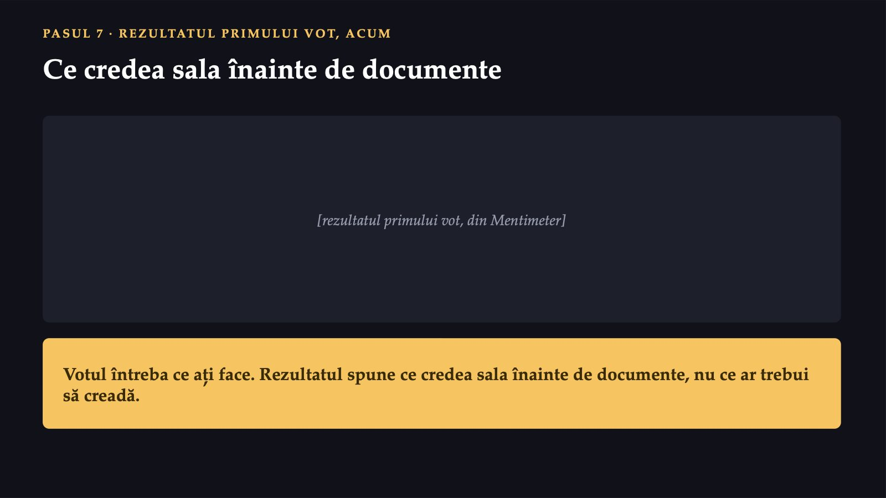
40 / 44Acum vedem, pentru prima dată, rezultatul votului de la început: luni dimineață, la primul plic, ce faceți? Votul întreba ce ați face. Rezultatul spune ce credea sala înainte de documente, nu ce ar trebui să creadă.
(b): „e doar o mulțumire”
![O VARIANTĂ NU REZISTĂ DOCUMENTELOR (b): „e doar o mulțumire” 1 Înalta Curte, 2015: primirea de plăți suplimentare sau donații de la pacienți de către medicul unui spital public nu este exercitarea unui drept recunoscut de lege. Premisa: medicul e funcționar public pentru legea penală. 2 Textul despre luarea de mită nu face deosebire după momentul în care se primește folosul. Externarea nu schimbă nimic. Nu rezultă ce ar decide o instanță într-un caz anume; rezultă numai că „e doar o mulțumire” nu are sprijin în aceste texte.](diapozitive/C07/041.jpg) 41 / 44
41 / 44O variantă nu rezistă însă documentelor: (b), îl primesc, pentru că pacientul a plecat deja și e doar o mulțumire. În a doua ședință ați văzut că Înalta Curte a stabilit, în 2015, că primirea de plăți suplimentare sau donații de la pacienți de către medicul unui spital public nu este exercitarea unui drept recunoscut de lege. Curtea a pornit de la premisa că medicul unui spital public este funcționar public pentru legea penală. Textul despre luarea de mită nu face deosebire după momentul în care se primește folosul. Externarea nu schimbă, deci, nimic. Nu rezultă de aici ce ar decide o instanță într-un caz anume; rezultă numai că „e doar o mulțumire” nu are sprijin în aceste texte. Varianta (c) primește și ea plicul, cu alt motiv; varianta (a) este cea pe care o sprijină ședința a șasea.
Recitiți ce ați scris
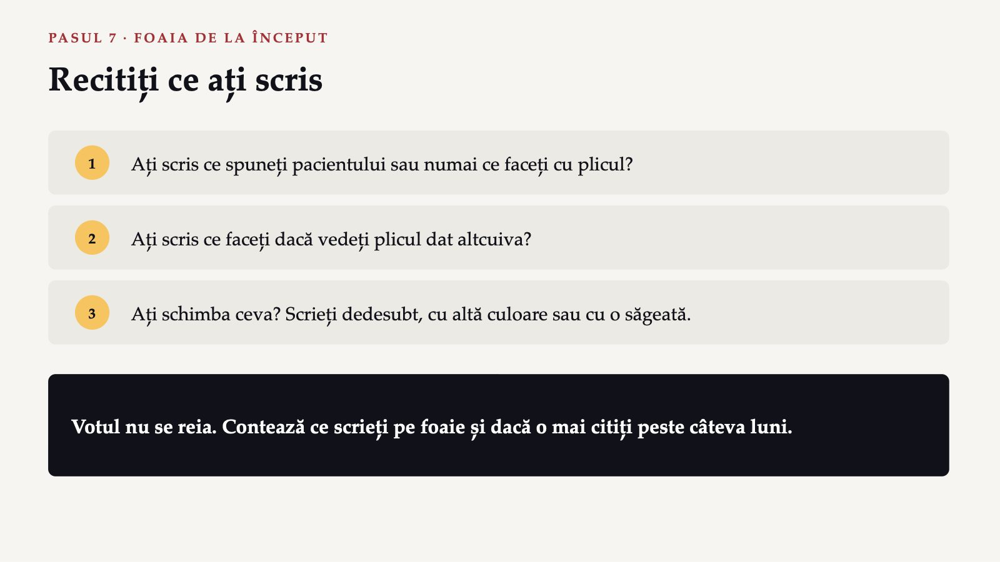
42 / 44Luați foaia de hârtie și citiți ce ați scris acum o oră și jumătate. Trei întrebări vă pot ajuta, numai pentru voi. Ați scris ce spuneți pacientului sau numai ce faceți cu plicul? În a șasea ședință ați văzut că o frază simplă, îngrijirea dumneavoastră nu se schimbă, contează pentru pacient. Ați scris ce faceți dacă vedeți plicul dat altcuiva? Acum știți că aveți drumuri și că ele au reguli diferite. Ați schimba ceva? Dacă da, scrieți schimbarea dedesubt. Votul nu se reia: ce contează este ce scrieți pe foaie și dacă o mai citiți peste câteva luni.
Luni dimineață
![PRIMUL PLIC · CE FACEȚI DIFERIT DE LUNI Luni dimineață 1 La primul plic: refuzați plata, nu omul; îngrijirea nu depinde de nimic în afara regulilor spitalului. 2 Pacientului care vrea să sesizeze: un răspuns în chestionar nu ajunge; consiliul etic, prin manager, sau ministerul. 3 La plicul dat unui coleg: consiliul etic, canalul intern sau Agenția Națională de Integritate. 4 La consiliul etic, cu numele vostru; altfel sesizarea se clasează. 5 La orice cifră despre corupție: ce întrebare, cui și în ce an. Păstrați foaia de azi. Recitiți-o la prima gardă.](diapozitive/C07/043.jpg) 43 / 44
43 / 44Ce faceți diferit de luni. Când un pacient vă întinde un plic, refuzați plata, nu omul, și spuneți-i că îngrijirea lui nu depinde de nimic în afara regulilor spitalului. Când un pacient vă spune că vrea să sesizeze o cerere de bani, spuneți-i că un răspuns în chestionar nu ajunge și unde poate scrie: consiliul etic, prin manager, sau ministerul. Când vedeți un plic dat unui coleg, nu sunteți obligați să tăceți și nici să mergeți întâi la șef. Când scrieți consiliului etic, scrieți cu numele vostru. Când cineva vă dă o cifră despre corupția din spitale, întrebați ce întrebare s-a pus, cui și în ce an. Păstrați foaia de azi și recitiți-o la prima gardă.
Trei întrebări pentru final
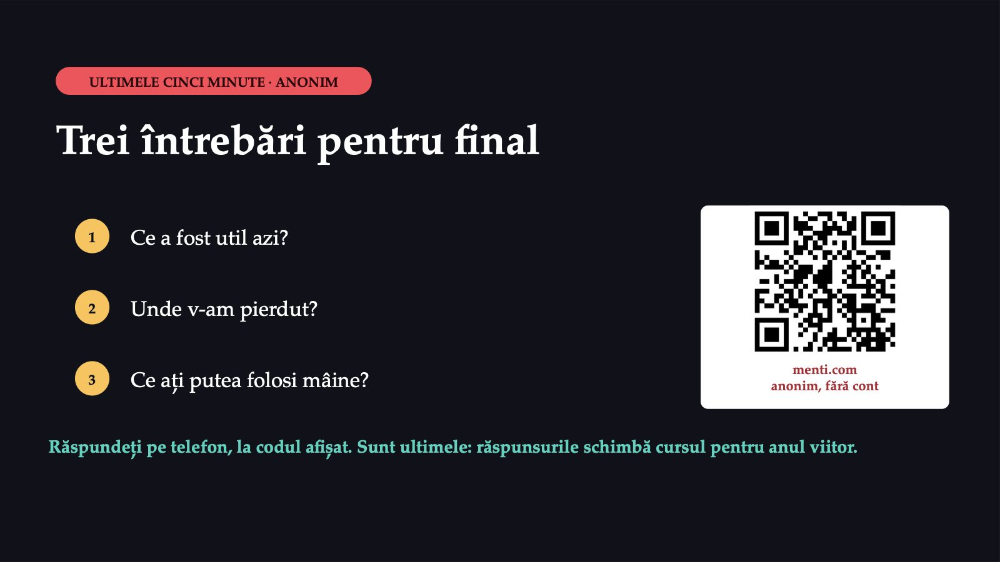
44 / 44Trei întrebări anonime, pe telefon, la codul afișat: ce a fost util azi, unde v-am pierdut și ce ați putea folosi mâine. Sunt ultimele; răspunsurile la ele schimbă cursul pentru anul viitor.
Săgeți sau spațiu: navigare · O: vedere de ansamblu · N: notele prezentatorului · F: ecran complet · Esc: închidere